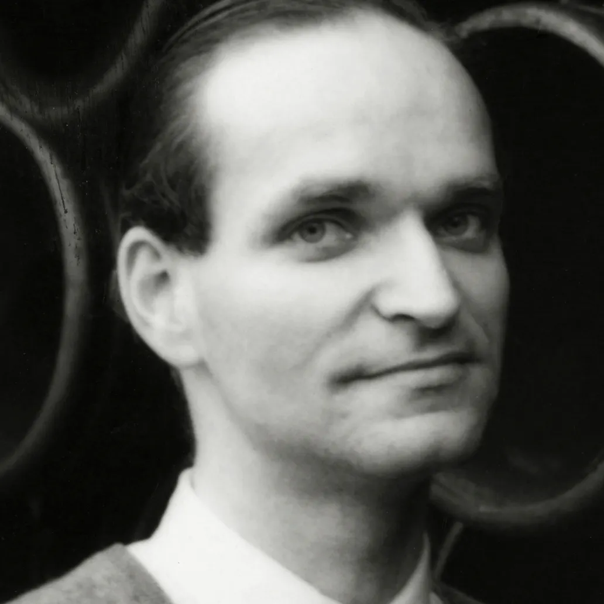

Meet the robots.
Ralf Hutter is the brain and conductor

Florian Schneider adds inspiration
Karl plays melody and percussion
Wolfgang is a percussionist
We always found that many people are robots without knowing it. The interpreters of classical music, Horowitz for example, they are like robots, making a reproduction of the music which is always the same. It's automatic, and they do it as if it were natural, which is not true
-Florian Schneider
Call to action! It's time!
Sign up for our product my clicking that button right over there!